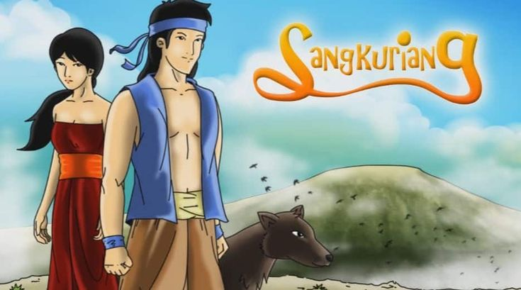
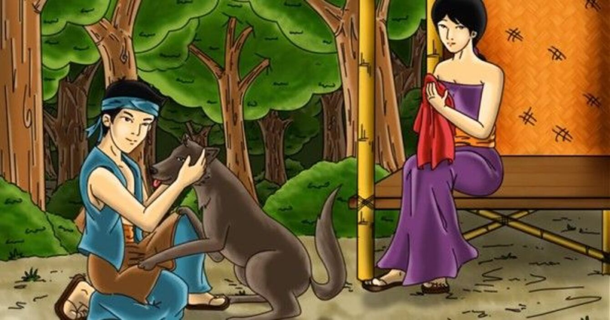

Legenda Sangkuriang
Ini adalah cerita Legenda Sangkuriang. Sangkuriang adalah seorang pemuda yang jatuh cinta pada ibunya sendiri, Dayang Sumbi, tanpa mengetahui bahwa itu adalah ibunya. Mereka akhirnya terlibat dalam sebuah kisah yang mengharukan tentang takdir dan cinta yang terlarang...
Sangkuriang dan Dayang Sumbi adalah salah satu cerita rakyat terkenal dari Jawa Barat, Indonesia. Kisah ini sarat dengan nilai-nilai budaya, mitos, dan keajaiban, serta mengandung pelajaran moral. Berikut adalah penjelasan lebih lanjut:
Awal kisah
Dayang Sumbi adalah seorang putri cantik yang tinggal di sebuah kerajaan. Karena sebuah kesalahan kecil, ia diusir dari istana dan memilih hidup di sebuah hutan. Di sana, ia hidup sederhana bersama seekor anjing bernama Tumang, yang sebenarnya adalah titisan dewa. Suatu hari, Dayang Sumbi menjatuhkan benang pintalnya. Ia berjanji, siapa pun yang mengambilkannya, ia akan menikahinya. Tumang mengambilkan benang itu, dan sesuai janjinya, Dayang Sumbi menikahi Tumang. Dari pernikahan ini, lahirlah seorang anak bernama Sangkuriang.
Kesalahpahaman dan Pengusiran

Sangkuriang tumbuh menjadi pemuda gagah dan pemberani. Namun, ia tidak tahu bahwa Tumang adalah ayahnya. Suatu ketika, Dayang Sumbi meminta Sangkuriang berburu rusa, tetapi ia gagal mendapatkan buruannya. Karena kesal, ia membunuh Tumang dan membawa hatinya sebagai persembahan kepada ibunya. Saat mengetahui kebenarannya, Dayang Sumbi sangat marah. Ia memukul kepala Sangkuriang dengan sendok nasi hingga terluka dan mengusirnya dari rumah.
Pertemuan Kembali

Bertahun-tahun kemudian, Sangkuriang yang sudah dewasa tanpa sengaja bertemu dengan Dayang Sumbi. Berkat kecantikan Dayang Sumbi yang abadi, Sangkuriang tidak menyadari bahwa ia adalah ibunya. Ia jatuh cinta dan melamarnya. Dayang Sumbi yang mulai mengenali Sangkuriang dari bekas luka di kepalanya, merasa dilema. Untuk menolak lamaran itu, ia memberikan syarat mustahil: Sangkuriang harus membuat sebuah bendungan besar dan perahu dalam semalam.
Keajaiban dan Akhir Kisah

Dengan kekuatan supranatural, Sangkuriang hampir menyelesaikan tugasnya. Melihat ini, Dayang Sumbi memohon bantuan dewa agar menghalanginya. Dewa pun membuat matahari terbit lebih awal. Sangkuriang merasa ditipu, sehingga ia marah besar. Dalam kemarahannya, ia menendang perahu yang dibuatnya hingga terbalik. Perahu itu kemudian menjadi Gunung Tangkuban Perahu yang terkenal hingga sekarang.

Pesan Moral
Cerita ini mengajarkan tentang pentingnya menghormati orang tua, memahami batas-batas moral, dan menerima konsekuensi dari tindakan kita. Sangkuriang menjadi pengingat bahwa kesombongan dan nafsu bisa berujung pada kehancuran.